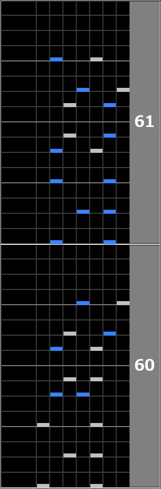
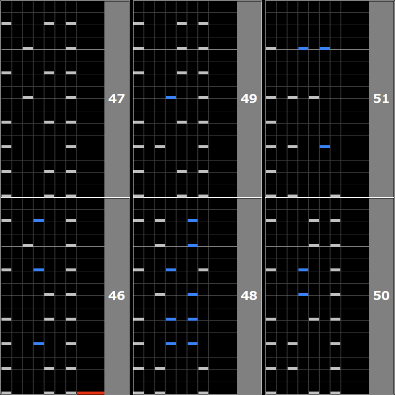

📑 文章目录（9 节）
本页面汇总了 beatmania IIDX 单打段位认定“六段”的攻略信息。
各段位的参考曲目与合格者比例已汇总在《段位认定参考标准一览》中。
关于初段至五段的参考标准与课题曲，请参阅以下文章。
CastHour SP 六段攻略
段位认定的心得- 为防沾癖（练出坏癖），每周最多只挑战 1 次
- 务必先充分热身（至少打满 2～3 局）
- 状态不好的日子不要硬考
①Amazing Mirage(H)
前中段没有什么特别难的地方。尾段的连续同时押段落相对棘手，提前做好心理准备即可。

如果在这首歌就被扣掉太多血量，说明明显是实力不足，建议先多接触 ☆7～9 范围内的各种谱面，练出扎实实力后再来重新挑战。
☆7～9 各类曲目
②Hello Happiness(H)
本作六段的转盘曲担当。虽然以 8 分转盘为主，但与键盘复合的配置相当多，不擅长搓盘的玩家在这里会被削掉大量血条。
由于下一首 Sphere 从开头就很难，为了尽可能保留血量进入第三首，不擅长转盘的玩家平时一定要有意识地多选皿曲来练。
同时，注意不要在道中的 8 分同时押段落掉太多血，这一点也很关键。
- Halfway of promise(H)
- naughty girl@Queen’s Palace(H)
- Spin the Disc(A)
- Watch Out Pt.2(H)
- 廿(H)
③Sphere(H)
延续自前作的集同时押、楼梯、纵轴、转盘等所有要素于一身的综合谱面。过去在 CS 家用机版 RED 和 DD 中也曾入选六段，今后再次入选的可能性也很高。
虽然是综合谱面，但从第 46 小节开始带纵轴要素的连续同时押非常具有标志性。

这一段的诀窍在于不要过度死盯纵轴，而是把谱面当作一连串同时押来整体读谱，不过要做到这一点需要具备相应的读谱能力。
推荐找频繁出现 3 键同时押的谱面开 RANDOM 进行乱打练习。先从比 Sphere 的 BPM 更慢（160 以下）的谱面开始习惯吧，这同时也是七段之后极佳的基础训练。
- Boundary(H)
- Harmony and Lovely(H)
- Ravei*t!! Rave*it!!(H)
- The Smile of You(A)
- With your Smile(A)
④Hurry Hurry(A)
从开局起就由包含相邻键的 3 键、4 键同时押大显神威的谱面。虽然同样是同时押谱面，但风格与 Sphere 略有不同，有不少人反而会觉得这首更简单一些。
对策和练习方法与上一首 Sphere 相同，推荐拿频繁出现 3 键同时押的谱面进行乱打练习。
只要把同时押按稳了，剩下的段落怎么都能撑过去，鼓足干劲一口气冲过去吧！
- Boundary(H)
- Harmony and Lovely(H)
- Ravei*t!! Rave*it!!(H)
- The Smile of You(A)
- With your Smile(A)
总评与总结
不仅限于本作，六段的第 1、2 首与第 3 首之后的难度落差向来非常大。能带着多少剩余血量站到第 3 首 Sphere 面前，将是过关的关键。
如果在第 1、2 首就会暴毙，那离合格还差得远，请先把 ☆7～8 的点灯（Clear Lamp）多点亮一些来积累实力。
已经能打到第 3 首的玩家，就可以开始加入 3 键同时押的专项练习了。无论是 Sphere 还是 Hurry Hurry，在连续落下的 3 键同时押中稳住不掉血，就是通关的核心要点。
特别是 Hurry Hurry 连续出现了该难度段较少见的奇特同时押排列，使用 RANDOM 选项来练习会非常见效。
从 ☆9 开始 3 键以上的同时押会骤然增多，趁现在提早打好基础吧。
☆7
- Mind Mapping(H)
- ちらちら・はらはら(A)
☆8
- Fly Above(A)
- Harmony and Lovely(H)
- The Smile of You(A)
- With your Smile(A)
- 嘆きの樹(N)
- ハリツヤランデヴー(H)
☆9
- Boundary(H)
- Boundary(A)
- chrono diver -fragment-(A)
- Line 4 Ruin(H)
- Rave*it!! Rave*it!!(H)
- 翼(A)
通过六段之后，下一个目标就是七段了。关于七段的参考标准与练习方法，请参阅以下文章。
INFINITAS・历代街机・家用机版 SP 六段
以下仅列出历代课题曲清单。
INFINITAS
- 黒髪乱れし修羅となりて(H)
- bloomin’ feeling(H)
- FLOWER(H)
- Colors(radio edit)(H)
历代街机・家用机版
街机版历代作品
BISTROVER
- Boomy and The Boost(H)
- Digitank System(H)
- Sphere(H)
- Hurry Hurry(A)
HEROIC VERSE
- NINJA IS DEAD IIDX ver.(H)
- Bounce Bounce Bounce(H)
- 旅人リラン(H)
- rottel-the-Mercury(H)
Rootage
- 紅牡丹(H)
- Bounce Bounce Bounce(H)
- 旅人リラン(H)
- rottel-the-Mercury(H)
CANNON BALLERS
- quasar(H)
- バンブーソード・ガール(H)
- DIAVOLO(H)
- bloomin’ feeling(H)
SINOBUZ
- New Decade IIDX Edition(H)
- 黒髪乱れし修羅となりて(H)
- Rise’n Beauty(H)
- bloomin’ feeling(H)
copula
- Apocalypse ～dirge of swans～(H)
- 黒髪乱れし修羅となりて(H)
- naughty girl@Queen’s Palace(H)
- bloomin’ feeling(H)
PENDUAL
- Devilz Sacrifice-贖罪の羊-(H)
- 黒髪乱れし修羅となりて(H)
- Frozen Ray(original mix)(H)
- bloomin’ feeling(H)
SPADA
- FLOWER(H)
- 黒髪乱れし修羅となりて(H)
- Be quiet(H)
- bloomin’ feeling(H)
tricoro
- THANK YOU FOR PLAYING(H)
- 黒髪乱れし修羅となりて(H)
- Be quiet(H)
- bloomin’ feeling(H)
Lincle
- THANK YOU FOR PLAYING(H)
- カゴノトリ～弐式～(H)
- Rise’n Beauty(H)
- bloomin’ feeling(H)
Resort Anthem
- THANK YOU FOR PLAYING(H)
- カゴノトリ～弐式～(H)
- Rise’n Beauty(H)
- bloomin’ feeling(H)
SIRIUS
- THANK YOU FOR PLAYING(H)
- カゴノトリ～弐式～(H)
- Rise’n Beauty(H)
- bloomin’ feeling(H)
EMPRESS
- traces(H)
- CaptivAte2～覚醒～(H)
- MOON(H)
- ZERO-ONE(H)
DJ TROOPERS
- traces(H)
- CaptivAte ～浄化～(H)
- MOON(H)
- Distress(H)
GOLD
- HIGH(H)
- Be quiet(H)
- Regulus(H)
- Colors(radio edit)(H)
DistorteD
- Apocalypse～dirge of swans～(H)
- murmur twins(H)
- quasar(H)
- Colors(radio edit)(H)
家用机版（CS）历代作品
EMPRESS
- naughty girl@Queen’s Palace(H)
- ALL MY TURN-このターンに、オレの全てを賭ける-(H)
- Turii-Panta rhei-(H)
- Programmed World(H)
DJ TROOPERS
- NEW GENERATION -もう、お前しか見えない-(H)
- Spica(H)
- Colors(radio edit)(H)
- Anisakis -somatic mutationtype “Forza”-(H)
GOLD
- Halfway of promise(H)
- the shadow(H)
- LOVELY STORM(H)
- Make Me Your Own(H)
DistorteD
- Sphere(H)
- Karma(H)
- MOON(H)
- Apocalypse ～dirge of swans～(H)
HAPPY SKY
- Tizona d’El Cid(H)
- Little Little Princess(H)
- Agnus Dei(H)
- DAWN -THE NEXT ENDEAVOUR-(H)
RED
- Sphere(H)
- rainbow flyer(H)
- DXY!(H)
- RED ZONE(H)
10th style
- Love Is Eternity(H)
- Colors(radio edit)(H)
- Lucy(H)
- HYPE THE CORE(H)
9th style
- Quickening(H)
- Karma(H)
- ACT(H)
- Distress(H)
8th style
- rainbow flyer(H)
- Colors(radio edit)(H)
- memories(H)
- murmur twins(H)
7th style
- Tomorrow Perfume(H)
- Colors(radio edit)(H)
- DXY!(H)
- Regulus(H)